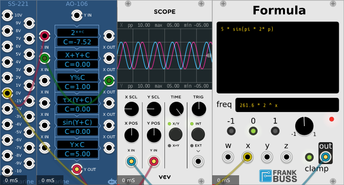

In the example above we have an AO-106 6-algorithm device functioning as a voltage controlled sine wave oscillator. An SS-221 on the left is providing a reference 1v/oct CV to both the AO-106 and a Frank Buss Formula for comparison.
The first block in the AO-106 is providing a small delta value.
The second block takes that delta value and adds it to the X-input which is fed from...
...the third block which takes the accumulated value and reduces it modulo 1.
The result is that we have a signal in a feedback loop from the third block back to the second block, which gradually grows over time, and cycles around every time it reaches 1. Effectively a sawtooth wave with a frequency that depends on the input voltage, and a range from 0V to 1V.
The fourth block multiplies this sawtooth amplitude by tau (2 pi) to give an amplitude that ranges from 0V to tauV.
The fifth block takes the sine of this sawtooth. Since a range of 0 to tau in radians represents one complete cycle, the resulting signal is a sine wave with a range of -1V to +1V
The sixth block multiplies the signal by 5 to give the final -5V to +5V sine wave.
The complicated part of this patch is in the first block where the algorithm is 2x+c. Where does this value of C = -7.52 come from?
To achieve our basic requirement of 1v/oct, we need to raise 2 to the power of the CV input. For each increase 1V increase in the CV, the resulting value doubles, just like the frequency doubling as we move up an octave. But we have some further requirements.
We want our signal frequency to be middle C (261.6Hz) when the CV is at 0V, so we should multiply our power of 2 by 261.6. That gives us a value in cycles per second. But then we need to divide this value by our sample rate, in this case I'm running at 48,000Hz sample rate. We divide by this number so that our delta accumulates to the right number of cycles every second.
Our algorithm for the delta value then is
2x × 261.6 ÷ 48000
or
2x × 0.00545
But we could represent 0.00545 as a 2 raised to some power... 2n
n would be the base-2 logarithm of 0.00545 which is -7.51953
Now we can say that our delta value is
2x × 2-7.51953
or
2x - 7.51953
This is where the figures in the first block come from.
The AO-1xx series of devices offer only two decimal places of precision in the constant setting, as a result this example oscillator is ever so slightly flat. However this discrepancy is less that the drift in the Fundamental VCO1.
Note also that changing the engine sample rate would change the frequency of the oscillator. Doubling the engine sample rate to 96,000 Hz would require adjusting the constant from -7.52 to -8.52.
The Frank Buss Formula has a built in sawtooth oscillator which automatically compensates for changes in the engine sample rate.